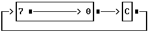

Intel Syntax Reference Guide
This is an intel syntax reference guide. I want to thank Leos Literak for putting this together! The reason I am replicating it here is (1) for practical reference and (2) just to make sure it doesn't get lost in the ether of the internet. This is really practical when your debugging and need to know what memory manipulations a series of instructions will make.
Instructions
Registers - CPU Registers
Clock Cycle - Instruction Clock Cycle Calculations
Task State - Calculation
FLAGS - Intel 8086 Family Flags Register
MSW - Machine Status Word (286+ only)
AAA - Ascii Adjust for Addition
AAD - Ascii Adjust for Division
AAM - Ascii Adjust for Multiplication
AAS - Ascii Adjust for Subtraction
ADC - Add With Carry
ADD - Arithmetic Addition
AND - Logical And
ARPL - Adjusted Requested Privilege Level of Selector (286+ PM)
BOUND - Array Index Bound Check (80188+)
BSF - Bit Scan Forward (386+)
BSR - Bit Scan Reverse (386+)
BSWAP - Byte Swap (486+)
BT - Bit Test (386+)
BTC - Bit Test with Compliment (386+
BTR - Bit Test with Reset (386+)
BTS - Bit Test and Set (386+)
CALL - Procedure Call
CBW - Convert Byte to Word
CDQ - Convert Double to Quad (386+)
CLC - Clear Carry
CLD - Clear Direction Flag
CLI - Clear Interrupt Flag (disable)
CLTS - Clear Task Switched Flag (286+ privileged).
CMC - Complement Carry Flag
CMP - Compare
CMPS - Compare String (Byte, Word or Doubleword)
CMPXCHG - Compare and Exchange
CWD - Convert Word to Doubleword
CWDE - Convert Word to Extended Doubleword (386+)
DAA - Decimal Adjust for Addition
DAS - Decimal Adjust for Subtraction
DEC - Decrement.
DIV - Divide
ENTER - Make Stack Frame (80188+)
ESC - Escape
HLT - Halt CPU
IDIV - Signed Integer Division
IMUL - Signed Multiply
IN - Input Byte or Word From Port
INC - Increment
INS - Input String from Port (80188+)
INT - Interrupt
INTO - Interrupt on Overflow
INVD - Invalidate Cache (486+)
INVLPG - Invalidate Translation Look-Aside Buffer Entry (486+)
IRET/IRETD - Interrupt Return.
Jxx - Jump Instructions Table.
JCXZ/JECXZ - Jump if Register (E)CX is Zero
JMP - Unconditional Jump
LAHF - Load Register AH From Flags
LAR - Load Access Rights (286+ protected)
LDS - Load Pointer Using DS
LEA - Load Effective Address
LEAVE - Restore Stack for Procedure Exit (80188+)
LES - Load Pointer Using ES
LFS - Load Pointer Using FS (386+)
LGDT - Load Global Descriptor Table (286+privileged)
LIDT - Load Interrupt Descriptor Table (286+privileged)
LGS - Load Pointer Using GS (386+)
LLDT - Load Local Descriptor Table (286+privileged)
LMSW - Load Machine Status Word (286+ privileged)
LOCK - Lock Bus
LODS - Load String (Byte, Word or Double)
LOOP - Decrement CX and Loop if CX Not Zero
LOOPE/LOOPZ - Loop While Equal / Loop While Zero
LOOPNZ/LOOPNE - Loop While Not Zero / Loop While Not Equal
LSL - Load Segment Limit (286+ protected)
LSS - Load Pointer Using SS (386+)
LTR - Load Task Register (286+ privileged)
MOV - Move Byte or Word
MOVS - Move String (Byte or Word)
MOVSX - Move with Sign Extend (386+)
MOVZX - Move with Zero Extend (386+)
MUL - Unsigned Multiply
NEG - Two's Complement Negation
NOP - No Operation (90h)
NOT - One's Compliment Negation (Logical NOT)
OR - Inclusive Logical OR
OUT - Output Data to Port.
OUTS - Output String to Port (80188+)
POP - Pop Word off Stack
POPA/POPAD - Pop All Registers onto Stack (80188+)
POPF/POPFD - Pop Flags off Stack
PUSH - Push Word onto Stack
PUSHA/PUSHAD - Push All Registers onto Stack (80188+)
PUSHF/PUSHFD - Push Flags onto Stack
RCL - Rotate Through Carry Left.
RCR - Rotate Through Carry Right
REP - Repeat String Operation
REPE/REPZ - Repeat Equal / Repeat Zero
REPNE/REPNZ - Repeat Not Equal / Repeat Not Zero
RET/RETF - Return From Procedure
ROL - Rotate Left.
ROR - Rotate Right
SAHF - Store AH Register into FLAGS
SAL - Shift Arithmetic Left / Shift Logical Left
SAR - Shift Arithmetic Right
SBB - Subtract with Borrow/Carry
SCAS - Scan String (Byte, Word or Doubleword)
SETAE/SETNB - Set if Above or Equal / Set if Not Below (386+)
SETB/SETNAE - Set if Below / Set if Not Above or Equal (386+)
SETBE/SETNA - Set if Below or Equal / Set if Not Above (386+)
SETE/SETZ - Set if Equal / Set if Zero (386+)
SETNE/SETNZ - Set if Not Equal / Set if Not Zero (386+)
SETL/SETNGE - Set if Less / Set if Not Greater or Equal (386+)
SETGE/SETNL - Set if Greater or Equal / Set if Not Less (386+)
SETLE/SETNG - Set if Less or Equal / Set if Not greater or Equal (386+)
SETG/SETNLE - Set if Greater / Set if Not Less or Equal (386+)
SETS - Set if Signed (386+)
SETNS - Set if Not Signed (386+)
SETC - Set if Carry (386+)
SETNC - Set if Not Carry (386+)
SETO - Set if Overflow (386+)
SETNO - Set if Not Overflow (386+)
SETP/SETPE - Set if Parity / Set if Parity Even (386+)
SETNP/SETPO - Set if No Parity / Set if Parity Odd (386+)
SGDT - Store Global Descriptor Table (286+privileged)
SIDT - Store Interrupt Descriptor Table (286+privileged)
SHL - Shift Logical Left
SHR - Shift Logical Right
SHLD/SHRD - Double Precision Shift (386+)
SLDT - Store Local Descriptor Table (286+privileged)
SMSW - Store Machine Status Word (286+ privileged)
STC - Set Carry
STD - Set Direction Flag
STI - Set Interrupt Flag (Enable Interrupts)
STOS - Store String (Byte, Word or Doubleword)
STR - Store Task Register (286+ privileged)
SUB - Subtract
TEST - Test For Bit Pattern
VERR - Verify Read (286+ protected)
VERW - Verify Write (286+ protected)
WAIT/FWAIT - Event Wait
WBINVD - Write-Back and Invalidate Cache(486+)
XCHG - Exchange
XLAT/XLATB - Translate
XOR - Exclusive OR
Instruction Details
Intel 80x86 Family Architecture
| General Purpose Registers | Segment Registers |
|---|---|
| AH/AL AX (EAX) Accumulator | CS Code Segment |
| BH/BL BX (EBX) Base | DS Data Segment |
| CH/CL CX (ECX) Counter | SS Stack Segment |
| DH/DL DX (EDX) Data | ES Extra Segment |
| (FS) 386 and newer | |
| (Exx) indicates 386+ 32 bit register | (GS) 386 and newer |
| Pointer Registers | Stack Registers |
| SI (ESI) Source Index | SP (ESP) Stack Pointer |
| DI (EDI) Destination Index | BP (EBP) Base Pointer |
| IP Instruction Pointer | |
| Status Register | |
| FLAGS Status Flags (see FLAGS) | |
| Special Registers (386+ only) | |
| CR0 Control Register 0 | DR0 Debug Register 0 |
| CR2 Control Register 2 | DR1 Debug Register 1 |
| CR3 Control Register 3 | DR2 Debug Register 2 |
| DR3 Debug Register 3 | |
| TR4 Test Register 4 | DR6 Debug Register 6 |
| TR5 Test Register 5 | DR7 Debug Register 7 |
| TR6 Test Register 6 | |
| TR7 Test Register 7 | |
Register overriding
| Register | Default Segment | Valid Overrides |
|---|---|---|
| BP | SS | DS, ES, CS |
| SI or DI | DS | ES, SS, CS |
| DI strings | ES | None |
| SI strings | DS | ES, SS, CS |
Instruction Clock Cycle Calculation
Some instructions require additional clock cycles due to a "Next Instruction Component" identified by a "+m" in the instruction clock cycle listings. This is due to the prefetch queue being purge on a control transfers. Below is the general rule for calculating "m":
- 286 "m" is the number of bytes in the next instruction
- 386 "m" is the number of components in the next instruction (the instruction coding (each byte), plus the data and the displacement are all considered components)
Task State Calculation
"TS" is defined as switching from VM/486 or 80286 TSS to one of the following:
| New Task | |||||
|---|---|---|---|---|---|
| Old task | 486 TSS (VM=0) |
486 TSS (VM=1) |
386 TSS (VM=0) |
386 TSS (VM=1) |
286 TSS |
| 386 TSS (VM=0) | 309 | 226 | 282 | ||
| 386 TSS (VM=1) | 314 | 231 | 287 | ||
| 386 CPU/286 TSS | 307 | 224 | 280 | ||
| 486 CPU/286 TSS | 199 | 177 | 180 | ||
Miscellaneous
- all timings are for best case and do not take into account wait states, instruction alignment, the state of the prefetch queue, DMA refresh cycles, cache hits/misses or exception processing.
- to convert clocks to nanoseconds divide one microsecond by the processor speed in MegaHertz: (1000MHz/(n MHz)) = X nanoseconds
FLAGS - Intel 8086 Family Flags Register
|11|10|F|E|D|C|B|A|9|8|7|6|5|4|3|2|1|0|
| | | | | | | | | | | | | | | | | |___ CF Carry Flag
| | | | | | | | | | | | | | | | |___ 1
| | | | | | | | | | | | | | | |___ PF Parity Flag
| | | | | | | | | | | | | | |___ 0
| | | | | | | | | | | | | |___ AF Auxiliary Flag
| | | | | | | | | | | | |___ 0
| | | | | | | | | | | |___ ZF Zero Flag
| | | | | | | | | | |___ SF Sign Flag
| | | | | | | | | |___ TF Trap Flag (Single Step)
| | | | | | | | |___ IF Interrupt Flag
| | | | | | | |___ DF Direction Flag
| | | | | | |___ OF Overflow flag
| | | | |_____ IOPL I/O Privilege Level (286+ only)
| | | |_____ NT Nested Task Flag (286+ only)
| | |_____ 0
| |_____ RF Resume Flag (386+ only)
|______ VM Virtual Mode Flag (386+ only)
MSW - Machine Status Word (286+ only)
|31|30-5|4|3|2|1|0| Machine Status Word
| | | | | | |____ Protection Enable (PE)
| | | | | |_____ Math Present (MP)
| | | | |______ Emulation (EM)
| | | |_______ Task Switched (TS)
| | |________ Extension Type (ET)
| |__________ Reserved
|_____________ Paging (PG)
Bit 0 PE Protection Enable, switches processor between protected and
real mode
Bit 1 MP Math Present, controls function of the WAIT instruction
Bit 2 EM Emulation, indicates whether coprocessor functions are to be
emulated
Bit 3 TS Task Switched, set and interrogated by coprocessor on task switches
and when interpretting coprocessor instructions
Bit 4 ET Extension Type, indicates type of coprocessor in system
Bits 5-30 Reserved
bit 31 PG Paging, indicates whether the processor uses page tables to
translate linear addresses to physical addresses
AAA - Ascii Adjust for Addition
Usage: AAA
Modifies Flags: AF CF (OF,PF,SF,ZF undefined)
Changes contents of AL to valid unpacked decimal. The high order nibble is zeroed.
| Clocks | ||||
|---|---|---|---|---|
| operands | 286 | 386 | 486 | Size Bytes |
| none | 3 | 4 | 3 | 1 |
AAD - Ascii Adjust for Division
Usage: AAD
Modifies Flags: SF ZF PF (AF,CF,OF undefined)
Used before dividing unpacked decimal numbers. Multiplies AH by 10 and the adds result into AL. Sets AH to zero. This instruction is also known to have an undocumented behavior.
AL := 10*AH+AL
AH := 0
| Clocks | ||||
|---|---|---|---|---|
| operands | 286 | 386 | 486 | Size Bytes |
| none | 14 | 19 | 14 | 2 |
AAM - Ascii Adjust for Multiplication
Usage: AAM
Modifies Flags: PF SF ZF (AF,CF,OF undefined)
Used after multiplication of two unpacked decimal numbers, this instruction adjusts an unpacked decimal number. The high order nibble of each byte must be zeroed before using this instruction. This instruction is also known to have an undocumented behavior.
| Clocks | ||||
|---|---|---|---|---|
| operands | 286 | 386 | 486 | Size Bytes |
| none | 16 | 17 | 15 | 2 |
AAS - Ascii Adjust for Subtraction
Usage: AAS
Modifies Flags: AF CF (OF,PF,SF,ZF undefined)
Corrects result of a previous unpacked decimal subtraction in AL. High order nibble is zeroed.
| Clocks | ||||
|---|---|---|---|---|
| operands | 286 | 386 | 486 | Size Bytes |
| none | 3 | 4 | 3 | 1 |
ADC - Add With Carry
Usage: ADC dest,src
Modifies Flags: AF CF OF SF PF ZF
Sums two binary operands placing the result in the destination. If CF is set, a 1 is added to the destination.
| Clocks | ||||
|---|---|---|---|---|
| operands | 286 | 386 | 486 | Size Bytes |
| reg,reg | 2 | 2 | 1 | 2 |
| mem,reg | 7 | 7 | 3 | 2-4 |
| reg,mem | 7 | 6 | 2 | 2-4 |
| reg,immed | 3 | 2 | 1 | 3-4 |
| mem,immed | 7 | 7 | 3 | 3-6 |
| accum,immed | 3 | 2 | 1 | 2-3 |
ADD - Arithmetic Addition
Usage: ADD dest,src
Modifies Flags: AF CF OF PF SF ZF
Adds "src" to "dest" and replacing the original contents of "dest". Both operands are binary.
| Clocks | ||||
|---|---|---|---|---|
| operands | 286 | 386 | 486 | Size Bytes |
| reg,reg | 2 | 2 | 1 | 2 |
| mem,reg | 7 | 7 | 3 | 2-4 |
| reg,mem | 7 | 6 | 2 | 2-4 |
| reg,immed | 3 | 2 | 1 | 3-4 |
| mem,immed | 7 | 7 | 3 | 3-6 |
| accum,immed | 3 | 2 | 1 | 2-3 |
AND - Logical And
Usage: AND dest,src
Modifies Flags: CF OF PF SF ZF (AF undefined)
Performs a logical AND of the two operands replacing the destination with the result.
| Clocks | ||||
|---|---|---|---|---|
| operands | 286 | 386 | 486 | Size Bytes |
| reg,reg | 2 | 2 | 1 | 2 |
| mem,reg | 7 | 7 | 3 | 2-4 |
| reg,mem | 7 | 6 | 1 | 2-4 |
| reg,immed | 3 | 2 | 1 | 3-4 |
| mem,immed | 7 | 7 | 3 | 3-6 |
| accum,immed | 3 | 2 | 1 | 2-3 |
ARPL - Adjusted Requested Privilege Level of Selector (286+ PM)
Usage: ARPL dest,src
Modifies Flags: ZF
Compares the RPL bits of "dest" against "src". If the RPL bits of "dest" are less than "src", the destination RPL bits are set equal to the source RPL bits and the Zero Flag is set. Otherwise the Zero Flag is cleared.
| Clocks | ||||
|---|---|---|---|---|
| operands | 286 | 386 | 486 | Size Bytes |
| reg,reg | 10 | 20 | 9 | 2 |
| mem,reg | 11 | 21 | 9 | 4 |
BOUND - Array Index Bound Check
Usage: BOUND src,limit
Modifies Flags: None
Array index in source register is checked against upper and lower bounds in memory source. The first word located at "limit" is the lower boundary and the word at "limit+2" is the upper array bound. Interrupt 5 occurs if the source value is less than or higher than the source.
| Clocks | ||||
|---|---|---|---|---|
| operands | 286 | 386 | 486 | Size Bytes |
| reg16,mem32 | nj=13 | nj=10 | 7 | 2 |
| reg32,mem64 | nj=13 | nj=10 | 7 | 2 |
| nj = no jump taken | ||||
BSF - Bit Scan Forward (386+)
Usage: BSF dest,src
Modifies Flags: ZF
Scans source operand for first bit set. Sets ZF if a bit is found set and loads the destination with an index to first set bit. Clears ZF if no bits are found set. BSF scans forward across bit pattern (0-n) while BSR scans in reverse (n-0).
| Clocks | ||||
|---|---|---|---|---|
| operands | 286 | 386 | 486 | Size Bytes |
| reg,reg | 10+3n | 6-42 | 3 | |
| reg,mem | 10+3n | 7-43 | 3-7 | |
| reg32,reg32 | 10+3n | 6-42 | 3-7 | |
| reg32,mem32 | 10+3n | 7-43 | 3-7 | |
BSR - Bit Scan Reverse (386+)
Usage: BSR dest,src
Modifies Flags: ZF
Scans source operand for first bit set. Sets ZF if a bit is found set and loads the destination with an index to first set bit. Clears ZF if no bits are found set. BSF scans forward across bit pattern (0-n) while BSR scans in reverse (n-0).
| Clocks | ||||
|---|---|---|---|---|
| operands | 286 | 386 | 486 | Size Bytes |
| reg,reg | 10+3n | 6-103 | 3 | |
| reg,mem | 10+3n | 7-104 | 3-7 | |
| reg32,reg32 | 10+3n | 6-103 | 3-7 | |
| reg32,mem32 | 10+3n | 7-104 | 3-7 | |
BSWAP - Byte Swap (486+)
Usage: BSWAP reg32
Modifies Flags: none
Changes the byte order of a 32 bit register from big endian to little endian or vice versa. Result left in destination register is undefined if the operand is a 16 bit register.
| Clocks | ||||
|---|---|---|---|---|
| operands | 286 | 386 | 486 | Size Bytes |
| reg32 | 1 | 2 | ||
BT - Bit Test (386+)
Usage: BT dest,src
Modifies Flags: CF
The destination bit indexed by the source value is copied into the Carry Flag.
| Clocks | ||||
|---|---|---|---|---|
| operands | 286 | 386 | 486 | Size Bytes |
| reg16,immed8 | 3 | 3 | 4-8 | |
| mem16,immed8 | 6 | 6 | 4-8 | |
| reg16,reg16 | 3 | 3 | 3-7 | |
| mem16,reg16 | 12 | 12 | 3-7 | |
BTC - Bit Test with Compliment (386+)
Usage: BTC dest,src
Modifies Flags: CF
The destination bit indexed by the source value is copied into the Carry Flag after being complimented (inverted).
| Clocks | ||||
|---|---|---|---|---|
| operands | 286 | 386 | 486 | Size Bytes |
| reg16,immed8 | 6 | 6 | 4-8 | |
| mem16,immed8 | 8 | 8 | 4-8 | |
| reg16,reg16 | 6 | 6 | 3-7 | |
| mem16,reg16 | 13 | 13 | 3-7 | |
BTR - Bit Test with Reset (386+)
Usage: BTR dest,src
Modifies Flags: CF
The destination bit indexed by the source value is copied into the Carry Flag and then cleared in the destination.
| Clocks | ||||
|---|---|---|---|---|
| operands | 286 | 386 | 486 | Size Bytes |
| reg16,immed8 | 6 | 6 | 4-8 | |
| mem16,immed8 | 8 | 8 | 4-8 | |
| reg16,reg16 | 6 | 6 | 3-7 | |
| mem16,reg16 | 13 | 13 | 3-7 | |
BTS - Bit Test and Set (386+)
Usage: BTS dest,src
Modifies Flags: CF
The destination bit indexed by the source value is copied into the Carry Flag and then set in the destination.
| Clocks | ||||
|---|---|---|---|---|
| operands | 286 | 386 | 486 | Size Bytes |
| reg16,immed8 | 6 | 6 | 4-8 | |
| mem16,immed8 | 8 | 8 | 4-8 | |
| reg16,reg16 | 6 | 6 | 3-7 | |
| mem16,reg16 | 13 | 13 | 3-7 | |
CALL - Procedure Call
Usage: CALL destination
Modifies Flags: None
Pushes Instruction Pointer (and Code Segment for far calls) onto stack and loads Instruction Pointer with the address of proc-name. Code continues with execution at CS:IP.
| Clocks | |||
|---|---|---|---|
| operands | 286 | 386 | 486 |
| rel16 (near, IP relative) | 7 | 7+m | 3 |
| rel32 (near, IP relative) | 7+m | 3 | |
| reg16 (near, register indirect) | 7 | 7+m | 5 |
| reg32 (near, register indirect) | 7+m | 5 | |
| mem16 (near, memory indirect) | 11 | 10+m | 5 |
| mem32 (near, memory indirect) | 10+m | 5 | |
| ptr16:16 (far, full ptr supplied) | 13 | 17+m | 18 |
| ptr16:32 (far, full ptr supplied) | 17+m | 18 | |
| ptr16:16 (far, ptr supplied, prot. mode) | 26 | 34+m | 20 |
| ptr16:32 (far, ptr supplied, prot. mode) | 34+m | 20 | |
| m16:16 (far, indirect) | 16 | 22+m | 17 |
| m16:32 (far, indirect) | 22+m | 17 | |
| m16:16 (far, indirect, prot. mode) | 29 | 38+m | 20 |
| m16:32 (far, indirect, prot. mode) | 38+m | 20 | |
| ptr16:16 (task, via TSS or task gate) | 177 | TS | 37+TS |
| m16:16 (task, via TSS or task gate) | 180/185 | 5+TS | 37+TS |
| m16:32 (task) | TS | 37+TS | |
| m16:32 (task) | 5+TS | 37+TS | |
| ptr16:16 (gate, same privilege) | 41 | 52+m | 35 |
| ptr16:32 (gate, same privilege) | 52+m | 35 | |
| m16:16 (gate, same privilege) | 44 | 56+m | 35 |
| m16:32 (gate, same privilege) | 56+m | 35 | |
| ptr16:16 (gate, more priv, no parm) | 82 | 86+m | 69 |
| ptr16:32 (gate, more priv, no parm) | 86+m | 69 | |
| m16:16 (gate, more priv, no parm) | 83 | 90+m | 69 |
| m16:32 (gate, more priv, no parm) | 90+m | 69 | |
| ptr16:16 (gate, more priv, x parms) | 86+4x | 94+4x+m | 77+4x |
| ptr16:32 (gate, more priv, x parms) | 94+4x+m | 77+4x | |
| m16:16 (gate, more priv, x parms) | 90+4x | 98+4x+m | 77+4x |
| m16:32 (gate, more priv, x parms) | 98+4x+m | 77+4x | |
CBW - Convert Byte to Word
Usage: CBW
Modifies Flags: None
Converts byte in AL to word Value in AX by extending sign of AL throughout register AH.
| Clocks | ||||
|---|---|---|---|---|
| operands | 286 | 386 | 486 | Size Bytes |
| none | 2 | 3 | 3 | 1 |
CDQ - Convert Double to Quad (386+)
Usage: CDQ
Modifies Flags: None
Converts signed DWORD in EAX to a signed quad word in EDX:EAX by extending the high order bit of EAX throughout EDX
| Clocks | ||||
|---|---|---|---|---|
| operands | 286 | 386 | 486 | Size Bytes |
| none | 2 | 3 | 1 | |
CLC - Clear Carry
Usage: CLC
Modifies Flags: CF
Clears the Carry Flag.
| Clocks | ||||
|---|---|---|---|---|
| operands | 286 | 386 | 486 | Size Bytes |
| none | 2 | 2 | 2 | 1 |
CLD - Clear Direction Flag
Usage: CLD
Modifies Flags: DF
Clears the Direction Flag causing string instructions to increment the SI and DI index registers.
| Clocks | ||||
|---|---|---|---|---|
| operands | 286 | 386 | 486 | Size Bytes |
| none | 2 | 2 | 2 | 1 |
CLI - Clear Interrupt Flag (disable)
Usage: CLI
Modifies Flags: IF
Disables the maskable hardware interrupts by clearing the Interrupt flag. NMI's and software interrupts are not inhibited.
| Clocks | ||||
|---|---|---|---|---|
| operands | 286 | 386 | 486 | Size Bytes |
| none | 2 | 3 | 5 | 1 |
CLTS - Clear Task Switched Flag (286+ privileged)
Usage: CLTS
Modifies Flags: None
Clears the Task Switched Flag in the Machine Status Register. This is a privileged operation and is generally used only by operating system code.
| Clocks | ||||
|---|---|---|---|---|
| operands | 286 | 386 | 486 | Size Bytes |
| none | 2 | 5 | 7 | 2 |
CMC - Complement Carry Flag
Usage: CMC
Modifies Flags: CF
Toggles (inverts) the Carry Flag
| Clocks | ||||
|---|---|---|---|---|
| operands | 286 | 386 | 486 | Size Bytes |
| none | 2 | 2 | 2 | 1 |
CMP - Compare
Usage: CMP dest,src
Modifies Flags: AF CF OF PF SF ZF
Subtracts source from destination and updates the flags but does not save result. Flags can subsequently be checked for conditions.
| Clocks | ||||
|---|---|---|---|---|
| operands | 286 | 386 | 486 | Size Bytes |
| reg,reg | 2 | 2 | 1 | 2 |
| mem,reg | 7 | 5 | 2 | 2-4 |
| reg,mem | 6 | 6 | 2 | 2-4 |
| reg,immed | 3 | 2 | 1 | 3-4 |
| mem,immed | 6 | 5 | 2 | 3-6 |
| accum,immed | 3 | 2 | 1 | 2-3 |
CMPS - Compare String (Byte, Word or Doubleword)
Usage: CMPS dest,src
CMPSB
CMPSW
CMPSD (386+)
Modifies Flags: AF CF OF PF SF ZF
Subtracts destination value from source without saving results. Updates flags based on the subtraction and the index registers (E)SI and (E)DI are incremented or decremented depending on the state of the Direction Flag. CMPSB inc/decrements the index registers by 1, CMPSW inc/decrements by 2, while CMPSD increments or decrements by 4. The REP prefixes can be used to process entire data items.
| Clocks | ||||
|---|---|---|---|---|
| operands | 286 | 386 | 486 | Size Bytes |
| dest,src | 8 | 10 | 8 | 1 |
CMPXCHG - Compare and Exchange (486+)
Usage: CMPXCHG dest,src
Modifies Flags: AF CF OF PF SF ZF
Compares the accumulator (8-32 bits) with "dest". If equal the "dest" is loaded with "src", otherwise the accumulator is loaded with "dest".
| Clocks | ||||
|---|---|---|---|---|
| operands | 286 | 386 | 486 | Size Bytes |
| reg,reg | 6 | 2 | ||
| mem,reg | 7 | 2 | ||
| add 3 clocks if the "mem,reg" comparison fails | ||||
CWD - Convert Word to Doubleword
Usage: CWD
Modifies Flags: None
Extends sign of word in register AX throughout register DX forming a doubleword quantity in DX:AX.
| Clocks | ||||
|---|---|---|---|---|
| operands | 286 | 386 | 486 | Size Bytes |
| none | 2 | 2 | 3 | 1 |
CWDE - Convert Word to Extended Doubleword (386+)
Usage: CWDE
Modifies Flags: None
Converts a signed word in AX to a signed doubleword in EAX by extending the sign bit of AX throughout EAX.
| Clocks | ||||
|---|---|---|---|---|
| operands | 286 | 386 | 486 | Size Bytes |
| none | 3 | 3 | 1 | |
DAA - Decimal Adjust for Addition
Usage: DAA
Modifies Flags: AF CF PF SF ZF (OF undefined)
Corrects result (in AL) of a previous BCD addition operation. Contents of AL are changed to a pair of packed decimal digits.
| Clocks | ||||
|---|---|---|---|---|
| operands | 286 | 386 | 486 | Size Bytes |
| none | 3 | 4 | 2 | 1 |
DAS - Decimal Adjust for Subtraction
Usage: DAS
Modifies Flags: AF CF PF SF ZF (OF undefined)
Corrects result (in AL) of a previous BCD subtraction operation. Contents of AL are changed to a pair of packed decimal digits.
| Clocks | ||||
|---|---|---|---|---|
| operands | 286 | 386 | 486 | Size Bytes |
| none | 3 | 4 | 2 | 1 |
DEC - Decrement
Usage: DEC dest
Modifies Flags: AF OF PF SF ZF
Unsigned binary subtraction of one from the destination.
| Clocks | ||||
|---|---|---|---|---|
| operands | 286 | 386 | 486 | Size Bytes |
| reg8 | 2 | 2 | 1 | 2 |
| mem | 7 | 6 | 3 | 2-4 |
| reg16/32 | 2 | 2 | 1 | 1 |
DIV - Divide
Usage: DIV src
Modifies Flags: (AF,CF,OF,PF,SF,ZF undefined)
Unsigned binary division of accumulator by source. If the source divisor is a byte value then AX is divided by "src" and the quotient is placed in AL and the remainder in AH. If source operand is a word value, then DX:AX is divided by "src" and the quotient is stored in AX and the remainder in DX.
| Clocks | ||||
|---|---|---|---|---|
| operands | 286 | 386 | 486 | Size Bytes |
| reg8 | 14 | 14 | 16 | 2 |
| reg16 | 22 | 22 | 24 | 2 |
| reg32 | 38 | 40 | 2 | |
| mem8 | 17 | 17 | 16 | 2-4 |
| mem16 | 25 | 25 | 24 | 2-4 |
| mem32 | 41 | 40 | 2-4 | |
ENTER - Make Stack Frame (80188+)
Usage: ENTER locals,level
Modifies Flags: None
Modifies stack for entry to procedure for high level language. Operand "locals" specifies the amount of storage to be allocated on the stack. "Level" specifies the nesting level of the routine. Paired with the LEAVE instruction, this is an efficient method of entry and exit to procedures.
| Clocks | ||||
|---|---|---|---|---|
| operands | 286 | 386 | 486 | Size Bytes |
| immed16,0 | 11 | 10 | 14 | 4 |
| immed16,1 | 15 | 12 | 17 | 4 |
| immed16,immed8 | 12+4(n-1) | 15+4(n-1) | 17+3n | 4 |
ESC - Escape
Usage: ESC immed,src
Modifies Flags: None
Provides access to the data bus for other resident processors. The CPU treats it as a NOP but places memory operand on bus.
| Clocks | ||||
|---|---|---|---|---|
| operands | 286 | 386 | 486 | Size Bytes |
| immed,reg | 9-20 | ? | ? | 2 |
| immed,mem | 9-20 | ? | ? | 2-4 |
HLT - Halt CPU
Usage: HLT
Modifies Flags: None
Halts CPU until RESET line is activated, NMI or maskable interrupt received. The CPU becomes dormant but retains the current CS:IP for later restart.
| Clocks | ||||
|---|---|---|---|---|
| operands | 286 | 386 | 486 | Size Bytes |
| none | 2 | 5 | 4 | 1 |
IDIV - Signed Integer Division
Usage: IDIV src
Modifies Flags: (AF,CF,OF,PF,SF,ZF undefined)
Signed binary division of accumulator by source. If source is a byte value, AX is divided by "src" and the quotient is stored in AL and the remainder in AH. If source is a word value, DX:AX is divided by "src", and the quotient is stored in AL and the remainder in DX.
| Clocks | ||||
|---|---|---|---|---|
| operands | 286 | 386 | 486 | Size Bytes |
| reg8 | 17 | 19 | 19 | 2 |
| reg16 | 25 | 27 | 27 | 2 |
| reg32 | 43 | 43 | 2 | |
| mem8 | 20 | 22 | 20 | 2-4 |
| mem16 | 38 | 30 | 28 | 2-4 |
| mem32 | 46 | 44 | 2-4 | |
IMUL - Signed Multiply
Usage: IMUL src
IMUL src,immed (286+)
IMUL dest,src,immed8 (286+)
IMUL dest,src (386+)
Modifies Flags: CF OF (AF,PF,SF,ZF undefined)
Signed multiplication of accumulator by "src" with result placed in the accumulator. If the source operand is a byte value, it is multiplied by AL and the result stored in AX. If the source operand is a word value it is multiplied by AX and the result is stored in DX:AX. Other variations of this instruction allow specification of source and destination registers as well as a third immediate factor.
| Clocks | ||||
|---|---|---|---|---|
| operands | 286 | 386 | 486 | Size Bytes |
| reg8 | 13 | 9-14 | 13-18 | 2 |
| reg16 | 21 | 9-22 | 13-26 | 2 |
| reg32 | 9-38 | 12-42 | 2 | |
| mem8 | 16 | 12-17 | 13-18 | 2-4 |
| mem16 | 24 | 12-25 | 13-26 | 2-4 |
| mem32 | 12-41 | 13-42 | 2-4 | |
| reg16,reg16 | 9-22 | 13-26 | 3-5 | |
| reg32,reg32 | 9-38 | 13-42 | 3-5 | |
| reg16,mem16 | 12-25 | 13-26 | 3-5 | |
| reg16,immed | 21 | 9-22 | 13-26 | 3 |
| reg32,immed | 21 | 9-38 | 13-42 | 3-6 |
| reg16,reg16,immed | 2 | 9-22 | 13-26 | 3-6 |
| reg32,reg32,immed | 21 | 9-38 | 13-42 | 3-6 |
| reg16,mem16,immed | 24 | 12-25 | 13-26 | 3-6 |
| reg32,mem32,immed | 24 | 12-41 | 13-42 | 3-6 |
IN - Input Byte or Word From Port
Usage: IN accum,port
Modifies Flags: None
A byte, word or dword is read from "port" and placed in AL, AX or EAX respectively. If the port number is in the range of 0-255 it can be specified as an immediate, otherwise the port number must be specified in DX. Valid port ranges on the PC are 0-1024, though values through 65535 may be specified and recognized by third party vendors and PS/2's.
| Clocks | ||||
|---|---|---|---|---|
| operands | 286 | 386 | 486 | Size Bytes |
| accum,immed8 | 5 | 12 | 14 | 2 |
| accum,immed8 (PM) | 6/26 | 8/28/27 | 2 | |
| accum,DX | 5 | 13 | 14 | 1 |
| accum,DX (PM) | 7/27 | 8/28/27 | 1 | |
| 386+ protected mode timings depend on privilege
levels. first number is the timing if: CPL <= IOPL second number is the timing if: CPL > IOPL or in VM 86 mode (386) CPL >= IOPL (486) third number is the timing when: virtual mode on 486 processor 486 virtual mode always requires 27 cycles |
||||
INC - Increment
Usage: INC dest
Modifies Flags: AF OF PF SF ZF
Adds one to destination unsigned binary operand.
| Clocks | ||||
|---|---|---|---|---|
| operands | 286 | 386 | 486 | Size Bytes |
| reg8 | 2 | 2 | 1 | 2 |
| reg16 | 2 | 2 | 1 | 1 |
| reg32 | 2 | 2 | 1 | 1 |
| mem | 7 | 6 | 3 | 2-4 |
INS - Input String from Port (80188+)
Usage: INS dest,port
INSB
INSW
INSD (386+)
Modifies Flags: None
Loads data from port to the destination ES:(E)DI (even if a destination operand is supplied). (E)DI is adjusted by the size of the operand and increased if the Direction Flag is cleared and decreased if the Direction Flag is set. For INSB, INSW, INSD no operands are allowed and the size is determined by the mnemonic.
| Clocks | ||||
|---|---|---|---|---|
| operands | 286 | 386 | 486 | Size Bytes |
| dest,port | 15 | 7 | 1 | 1 |
| dest,port (PM) | 5 | 9/29 | 10/32/30 | 1 |
| none | 5 | 15 | 17 | 1 |
| none (PM) | 5 | 9/29 | 10/32/30 | 1 |
| 386+ protected mode timings depend on privilege
levels. first number is the timing if: CPL <= IOPL second number is the timing if: CPL > IOPL third number is the timing if: virtual mode on 486 processor |
||||
INT - Interrupt
Usage: INT num
Modifies Flags: TF IF
Initiates a software interrupt by pushing the flags, clearing the Trap and Interrupt Flags, pushing CS followed by IP and loading CS:IP with the value found in the interrupt vector table. Execution then begins at the location addressed by the new CS:IP
| Clocks | ||||
|---|---|---|---|---|
| operands | 286 | 386 | 486 | Size Bytes |
| 3 (constant) | 23+m | 33 | 26 | 2 |
| 3 (prot. mode, same priv.) | 40+m | 59 | 44 | 2 |
| 3 (prot. mode, more priv.) | 78+m | 99 | 71 | 2 |
| 3 (from VM86 to PL 0) | 119 | 82 | 2 | |
| 3 (prot. mode via task gate) | 167+m | TS | 37+TS | 2 |
| immed8 | 23+m | 37 | 30 | 1 |
| immed8 (prot. mode, same priv.) | 40+m | 59 | 44 | 1 |
| immed8 (prot. mode, more priv.) | 78+m | 99 | 71 | 1 |
| immed8 (from VM86 to PL 0) | 119 | 86 | 1 | |
| immed8 (prot. mode, via task gate) | 167+m | TS | 37+TS | 1 |
INTO - Interrupt on Overflow
Usage: INTO
Modifies Flags: IF TF
If the Overflow Flag is set this instruction generates an INT 4 which causes the code addressed by 0000:0010 to be executed.
| Clocks | ||||
|---|---|---|---|---|
| operands | 286 | 386 | 486 | Size Bytes |
| none: jump | 24+m | 35 | 28 | 1 |
| none: no jump | 3 | 3 | 3 | 1 |
| none: (prot. mode, same priv.) | 59 | 46 | 1 | |
| none: (prot. mode, more priv.) | 99 | 73 | 1 | |
| none: (from VM86 to PL 0) | 84 | 119 | 1 | |
| none: (prot. mode, via task gate) | TS | 39+TS | 1 | |
INVD - Invalidate Cache (486+)
Usage: INVD
Modifies Flags: None
Flushes CPU internal cache. Issues special function bus cycle which indicates to flush external caches. Data in write-back external caches is lost.
| Clocks | ||||
|---|---|---|---|---|
| operands | 286 | 386 | 486 | Size Bytes |
| none | 4 | 2 | ||
INVLPG - Invalidate Translation Look-Aside Buffer Entry (486+)
Usage: INVLPG
Modifies Flags: None
Invalidates a single page table entry in the Translation Look-Aside Buffer. Intel warns that this instruction may be implemented differently on future processors.
| Clocks | ||||
|---|---|---|---|---|
| operands | 286 | 386 | 486 | Size Bytes |
| none | 12 | 2 | ||
| timing is for TLB entry hit only. | ||||
IRET/IRETD - Interrupt Return
Usage: IRET
IRETD (386+)
Modifies Flags: AF CF DF IF PF SF TF ZF
Returns control to point of interruption by popping IP, CS and then the Flags from the stack and continues execution at this location. CPU exception interrupts will return to the instruction that cause the exception because the CS:IP placed on the stack during the interrupt is the address of the offending instruction.
| Clocks | ||||
|---|---|---|---|---|
| operands | 286 | 386 | 486 | Size Bytes |
| (iret)none | 17+m | 22 | 15 | 1 |
| (prot. mode) | 31+m | 38 | 15 | 1 |
| (to less privilege) | 55+m | 82 | 36 | 1 |
| (different task, NT=1) | 169+m | TS | TS+32 | 1 |
| (iretd) | 22/38 | 15 | 1 | |
| (to less privilege) | 82 | 36 | 1 | |
| (to VM86 mode) | 60 | 15 | 1 | |
| iretd (different task, NT=1) | TS | TS+32 | 1 | |
| 386 timings are listed as real-mode/protected mode | ||||
JXX - Jump Instructions Table
| Mnemonic | Meaning | Jump Condition |
|---|---|---|
| JA | Jump if Above | CF=0 and ZF=0 |
| JAE | Jump if Above or Equal | CF=0 |
| JB | Jump if Below | CF=1 |
| JBE | Jump if Below or Equal | CF=1 or ZF=1 |
| JC | Jump if Carry | CF=1 |
| JCXZ | Jump if CX Zero | CX=0 |
| JE | Jump if Equal | ZF=1 |
| JG | Jump if Greater (signed) | ZF=0 and SF=OF |
| JGE | Jump if Greater or Equal (signed) | SF=OF |
| JL | Jump if Less (signed) | SF != OF |
| JLE | Jump if Less or Equal (signed) | ZF=1 or SF != OF |
| JMP | Unconditional Jump | unconditional |
| JNA | Jump if Not Above | CF=1 or ZF=1 |
| JNAE | Jump if Not Above or Equal | CF=1 |
| JNB | Jump if Not Below | CF=0 |
| JNBE | Jump if Not Below or Equal | CF=0 and ZF=0 |
| JNC | Jump if Not Carry | CF=0 |
| JNE | Jump if Not Equal | ZF=0 |
| JNG | Jump if Not Greater (signed) | ZF=1 or SF != OF |
| JNGE | Jump if Not Greater or Equal (signed) | SF != OF |
| JNL | Jump if Not Less (signed) | SF=OF |
| JNLE | Jump if Not Less or Equal (signed) | ZF=0 and SF=OF |
| JNO | Jump if Not Overflow (signed) | OF=0 |
| JNP | Jump if No Parity | PF=0 |
| JNS | Jump if Not Signed (signed) | SF=0 |
| JNZ | Jump if Not Zero | ZF=0 |
| JO | Jump if Overflow (signed) | OF=1 |
| JP | Jump if Parity | PF=1 |
| JPE | Jump if Parity Even | PF=1 |
| JPO | Jump if Parity Odd | PF=0 |
| JS | Jump if Signed (signed) | SF=1 |
| JZ | Jump if Zero | ZF=1 |
| Clocks | ||||
|---|---|---|---|---|
| operands | 286 | 386 | 486 | Size Bytes |
| Jx: jump | 7+m | 7+m | 3 | 2 |
| no jump | 3 | 3 | 1 | 2 |
| Jx: near-label | 7+m | 3 | 4 | |
| no jump | 3 | 1 | 4 | |
| It's a good programming practice to organize code
so the expected case is executed without a jump since the actual jump takes longer to execute than falling through the test. |
||||
| see JCXZ and JMP for their respective timings | ||||
JCXZ/JECXZ - Jump if Register (E)CX is Zero
Usage: JCXZ label
JECXZ label (386+)
Modifies Flags: None
Causes execution to branch to "label" if register CX is zero. Uses unsigned comparision.
| Clocks | ||||
|---|---|---|---|---|
| operands | 286 | 386 | 486 | Size Bytes |
| label: jump | 8+m | 9+m | 8 | 2 |
| no jump | 4 | 5 | 5 | 2 |
JMP - Unconditional Jump
Usage: JMP target
Modifies Flags: None
Unconditionally transfers control to "label". Jumps by default are within -32768 to 32767 bytes from the instruction following the jump. NEAR and SHORT jumps cause the IP to be updated while FAR jumps cause CS and IP to be updated.
| Clocks | |||
|---|---|---|---|
| operands | 286 | 386 | 486 |
| rel8 (relative) | 7+m | 7+m | 3 |
| rel16 (relative) | 7+m | 7+m | 3 |
| rel32 (relative) | 7+m | 3 | |
| reg16 (near, register indirect) | 7+m | 7+m | 5 |
| reg32 (near, register indirect) | 7+m | 5 | |
| mem16 (near, mem indirect) | 11+m | 10+m | 5 |
| mem32 (near, mem indirect) | 15+m | 10+m | 5 |
| ptr16:16 (far, dword immed) | 12+m | 17 | |
| ptr16:16 (far, PM dword immed) | 27+m | 19 | |
| ptr16:16 (call gate, same priv.) | 38+m | 45+m | 32 |
| ptr16:16 (via TSS) | 175+m | TS | 42+TS |
| ptr16:16 (via task gate) | 180+m | TS | 43+TS |
| mem16:16 (far, indirect) | 43+m | 13 | |
| mem16:16 (far, PM indirect) | 31+m | 18 | |
| mem16:16 (call gate, same priv.) | 41+m | 49+m | 31 |
| mem16:16 (via TSS) | 178+m | 5+TS | 41+TS |
| mem16:16 (via task gate) | 183+m | 5+TS | 42+TS |
| ptr16:32 (far, 6 byte immed) | 12+m | 13 | |
| ptr16:32 (far, PM 6 byte immed) | 27+m | 18 | |
| ptr16:32 (call gate, same priv.) | 45+m | 31 | |
| ptr16:32 (via TSS) | TS | 42+TS | |
| ptr16:32 (via task state) | TS | 43+TS | |
| m16:32 (far, address at dword) | 43+m | 13 | |
| m16:32 (far, address at dword) | 31+m | 18 | |
| m16:32 (call gate, same priv.) | 49+m | 31 | |
| m16:32 (via TSS) | 5+TS | 41+TS | |
| m16:32 (via task state) | 5+TS | 42+TS | |
LAHF - Load Register AH From Flags
Usage: LAHF
Modifies Flags: None
Copies bits 0-7 of the flags register into AH. This includes flags AF, CF, PF, SF and ZF other bits are undefined.
AH := SF ZF xx AF xx PF xx CF
| Clocks | ||||
|---|---|---|---|---|
| operands | 286 | 386 | 486 | Size Bytes |
| none | 2 | 2 | 3 | 1 |
LAR - Load Access Rights (286+ protected)
Usage: LAR dest,src
Modifies Flags: ZF
The high byte of the of the destination register is overwritten by the value of the access rights byte and the low order byte is zeroed depending on the selection in the source operand. The Zero Flag is set if the load operation is successful.
| Clocks | ||||
|---|---|---|---|---|
| operands | 286 | 386 | 486 | Size Bytes |
| reg16,reg16 | 14 | 15 | 11 | 3 |
| reg32,reg32 | 15 | 11 | 3 | |
| reg16,mem16 | 16 | 16 | 11 | 3-7 |
| reg32,mem32 | 16 | 11 | 3-7 | |
LDS - Load Pointer Using DS
Usage: LDS dest,src
Modifies Flags: None
Loads 32-bit pointer from memory source to destination register and DS. The offset is placed in the destination register and the segment is placed in DS. To use this instruction the word at the lower memory address must contain the offset and the word at the higher address must contain the segment. This simplifies the loading of far pointers from the stack and the interrupt vector table.
| Clocks | ||||
|---|---|---|---|---|
| operands | 286 | 386 | 486 | Size Bytes |
| reg16,mem32 | 7 | 7 | 6 | 2-4 |
| reg,mem (PM) | 22 | 12 | 5-7 | |
LEA - Load Effective Address
Usage: LEA dest,src
Modifies Flags: None
Transfers offset address of "src" to the destination register.
| Clocks | ||||
|---|---|---|---|---|
| operands | 286 | 386 | 486 | Size Bytes |
| reg,mem | 3 | 2 | 1 | 2-4 |
LEAVE - Restore Stack for Procedure Exit (80188+)
Usage: LEAVE
Modifies Flags: LEAVE
Releases the local variables created by the previous ENTER instruction by restoring SP and BP to their condition before the procedure stack frame was initialized.
| Clocks | ||||
|---|---|---|---|---|
| operands | 286 | 386 | 486 | Size Bytes |
| none | 5 | 4 | 5 | 1 |
LES - Load Pointer Using ES
Usage: LES dest,src
Modifies Flags: None
Loads 32-bit pointer from memory source to destination register and ES. The offset is placed in the destination register and the segment is placed in ES. To use this instruction the word at the lower memory address must contain the offset and the word at the higher address must contain the segment. This simplifies the loading of far pointers from the stack and the interrupt vector table.
| Clocks | ||||
|---|---|---|---|---|
| operands | 286 | 386 | 486 | Size Bytes |
| reg,mem | 7 | 7 | 6 | 2-4 |
| reg,mem (PM) | 22 | 12 | 5-7 | |
LFS - Load Pointer Using FS (386+)
Usage: LFS dest,src
Modifies Flags: None
Loads 32-bit pointer from memory source to destination register and FS. The offset is placed in the destination register and the segment is placed in FS. To use this instruction the word at the lower memory address must contain the offset and the word at the higher address must contain the segment. This simplifies the loading of far pointers from the stack and the interrupt vector table.
| Clocks | ||||
|---|---|---|---|---|
| operands | 286 | 386 | 486 | Size Bytes |
| reg,mem | 7 | 6 | 5-7 | |
| reg,mem (PM) | 22 | 12 | 5-7 | |
LGDT - Load Global Descriptor Table (286+ privileged)
Usage: LGDT src
Modifies Flags: None
Loads a value from an operand into the Global Descriptor Table (GDT) register.
| Clocks | ||||
|---|---|---|---|---|
| operands | 286 | 386 | 486 | Size Bytes |
| mem64 | 11 | 11 | 11 | 5 |
LIDT - Load Interrupt Descriptor Table (286+ privileged)
Usage: LIDT src
Modifies Flags: None
Loads a value from an operand into the Interrupt Descriptor Table (IDT) register.
| Clocks | ||||
|---|---|---|---|---|
| operands | 286 | 386 | 486 | Size Bytes |
| mem64 | 12 | 11 | 11 | 5 |
LGS - Load Pointer Using GS (386+)
Usage: LGS dest,src
Modifies Flags: None
Loads 32-bit pointer from memory source to destination register and GS. The offset is placed in the destination register and the segment is placed in GS. To use this instruction the word at the lower memory address must contain the offset and the word at the higher address must contain the segment. This simplifies the loading of far pointers from the stack and the interrupt vector table.
| Clocks | ||||
|---|---|---|---|---|
| operands | 286 | 386 | 486 | Size Bytes |
| reg,mem | 7 | 6 | 5-7 | |
| reg,mem (PM) | 22 | 12 | 5-7 | |
LLDT - Load Local Descriptor Table (286+ privileged)
Usage: LLDT src
Modifies Flags: None
Loads a value from an operand into the Local Descriptor Table Register (LDTR).
| Clocks | ||||
|---|---|---|---|---|
| operands | 286 | 386 | 486 | Size Bytes |
| reg16 | 17 | 20 | 11 | 3 |
| mem16 | 19 | 24 | 11 | 5 |
LMSW - Load Machine Status Word (286+ privileged)
Usage: LMSW src
Modifies Flags: None
Loads the Machine Status Word (MSW) from data found at "src"
| Clocks | ||||
|---|---|---|---|---|
| operands | 286 | 386 | 486 | Size Bytes |
| reg16 | 3 | 10 | 13 | 3 |
| mem16 | 6 | 13 | 13 | 5 |
LOCK - Lock Bus
Usage: LOCK
LOCK: (386+ prefix)
Modifies Flags: None
This instruction is a prefix that causes the CPU assert bus lock signal during the execution of the next instruction. Used to avoid two processors from updating the same data location. The 286 always asserts lock during an XCHG with memory operands. This should only be used to lock the bus prior to XCHG, MOV, IN and OUT instructions.
| Clocks | ||||
|---|---|---|---|---|
| operands | 286 | 386 | 486 | Size Bytes |
| none | 0 | 0 | 1 | 1 |
LODS - Load String (Byte, Word or Double)
Usage: LODS src
LODSB
LODSW
LODSD (386+)
Modifies Flags: None
Transfers string element addressed by DS:SI (even if an operand is supplied) to the accumulator. SI is incremented based on the size of the operand or based on the instruction used. If the Direction Flag is set SI is decremented, if the Direction Flag is clear SI is incremented. Use with REP prefixes.
| Clocks | ||||
|---|---|---|---|---|
| operands | 286 | 386 | 486 | Size Bytes |
| src | 5 | 5 | 5 | 1 |
LOOP - Decrement CX and Loop if CX Not Zero
Usage: LOOP label
Modifies Flags: None
Decrements CX by 1 and transfers control to "label" if CX is not Zero. The "label" operand must be within -128 or 127 bytes of the instruction following the loop instruction
| Clocks | ||||
|---|---|---|---|---|
| operands | 286 | 386 | 486 | Size Bytes |
| label: jump | 8+m | 11+m | 6 | 2 |
| no jump | 4 | ? | 2 | 2 |
LOOPE/LOOPZ - Loop While Equal / Loop While Zero
Usage: LOOPE label
LOOPZ label
Modifies Flags: None
Decrements CX by 1 (without modifying the flags) and transfers control to "label" if CX != 0 and the Zero Flag is set. The "label" operand must be within -128 or 127 bytes of the instruction following the loop instruction.
| Clocks | ||||
|---|---|---|---|---|
| operands | 286 | 386 | 486 | Size Bytes |
| label: jump | 8+m | 11+m | 9 | 2 |
| no jump | 4 | ? | 6 | 2 |
LOOPNZ/LOOPNE - Loop While Not Zero / Loop While Not Equal
Usage: LOOPNZ label
LOOPNE label
Modifies Flags: None
Decrements CX by 1 (without modifying the flags) and transfers control to "label" if CX != 0 and the Zero Flag is clear. The "label" operand must be within -128 or 127 bytes of the instruction following the loop instruction.
| Clocks | ||||
|---|---|---|---|---|
| operands | 286 | 386 | 486 | Size Bytes |
| label: jump | 8+m | 11+m | 9 | 2 |
| no jump | 4 | ? | 6 | 2 |
LSL - Load Segment Limit (286+ protected)
Usage: LSL dest,src
Modifies Flags: ZF
Loads the segment limit of a selector into the destination register if the selector is valid and visible at the current privilege level. If loading is successful the Zero Flag is set, otherwise it is cleared.
| Clocks | ||||
|---|---|---|---|---|
| operands | 286 | 386 | 486 | Size Bytes |
| reg16,reg16 | 14 | 20/25 | 10 | 3 |
| reg32,reg32 | 20/25 | 10 | 3 | |
| reg16,mem16 | 16 | 21/26 | 10 | 5 |
| reg32,mem32 | 21/26 | 10 | 5 | |
| 386 times are listed "byte granular" / "page granular" | ||||
LSS - Load Pointer Using SS (386+)
Usage: LSS dest,src
Modifies Flags: None
Loads 32-bit pointer from memory source to destination register and SS. The offset is placed in the destination register and the segment is placed in SS. To use this instruction the word at the lower memory address must contain the offset and the word at the higher address must contain the segment. This simplifies the loading of far pointers from the stack and the interrupt vector table.
| Clocks | ||||
|---|---|---|---|---|
| operands | 286 | 386 | 486 | Size Bytes |
| reg,mem | 7 | 6 | 5-7 | |
| reg,mem (PM) | 22 | 12 | 5-7 | |
LTR - Load Task Register (286+ privileged)
Usage: LTR src
Modifies Flags: None
Loads the current task register with the value specified in "src".
| Clocks | ||||
|---|---|---|---|---|
| operands | 286 | 386 | 486 | Size Bytes |
| reg16 | 17 | 23 | 20 | 3 |
| mem16 | 19 | 27 | 20 | 5 |
MOV - Move Byte or Word
Usage: MOV dest,src
Modifies Flags: None
Copies byte or word from the source operand to the destination operand. If the destination is SS interrupts are disabled except on early buggy 808x CPUs. Some CPUs disable interrupts if the destination is any of the segment registers
| Clocks | ||||
|---|---|---|---|---|
| operands | 286 | 386 | 486 | Size Bytes |
| reg,reg | 2 | 2 | 1 | 2 |
| mem,reg | 3 | 2 | 1 | 2-4 |
| reg,mem | 5 | 4 | 1 | 2-4 |
| mem,immed | 3 | 2 | 1 | 3-6 |
| reg,immed | 2 | 2 | 1 | 2-3 |
| mem,accum | 3 | 2 | 1 | 3 |
| accum,mem | 5 | 4 | 1 | 3 |
| segreg,reg16 | 2 | 2 | 3 | 2 |
| segreg,mem16 | 5 | 5 | 9 | 2-4 |
| reg16,segreg | 2 | 2 | 3 | 2 |
| mem16,segreg | 3 | 2 | 3 | 2-4 |
| reg32,CR0/CR2/CR3 | 6 | 4 | ||
| CR0,reg32 | 10 | 16 | ||
| CR2,reg32 | 4 | 4 | 3 | |
| CR3,reg32 | 5 | 4 | 3 | |
| reg32,DR0/DR1/DR2/DR3 | 22 | 10 | 3 | |
| reg32,DR6/DR7 | 22 | 10 | 3 | |
| DR0/DR1/DR2/DR3,reg32 | 22 | 11 | 3 | |
| DR6/DR7,reg32 | 16 | 11 | 3 | |
| reg32,TR6/TR7 | 12 | 4 | 3 | |
| TR6/TR7,reg32 | 12 | 4 | 3 | |
| reg32,TR3 | 3 | |||
| TR3,reg32 | 6 | |||
| when the 386 special registers are used all operands are 32 bits | ||||
MOVS - Move String (Byte or Word)
Usage: MOVS dest,src
MOVSB
MOVSW
MOVSD (386+)
Modifies Flags: None
Copies data from addressed by DS:SI (even if operands are given) to the location ES:DI destination and updates SI and DI based on the size of the operand or instruction used. SI and DI are incremented when the Direction Flag is cleared and decremented when the Direction Flag is Set. Use with REP prefixes.
| Clocks | ||||
|---|---|---|---|---|
| operands | 286 | 386 | 486 | Size Bytes |
| dest,src | 5 | 7 | 7 | 1 |
MOVSX - Move with Sign Extend (386+)
Usage: MOVSX dest,src
Modifies Flags: None
Copies the value of the source operand to the destination register with the sign extended.
| Clocks | ||||
|---|---|---|---|---|
| operands | 286 | 386 | 486 | Size Bytes |
| reg,reg | 3 | 3 | 3 | |
| reg,mem | 6 | 3 | 3-7 | |
MOVZX - Move with Zero Extend (386+)
Usage: MOVZX dest,src
Modifies Flags: None
Copies the value of the source operand to the destination register with the zeroes extended.
| Clocks | ||||
|---|---|---|---|---|
| operands | 286 | 386 | 486 | Size Bytes |
| reg,reg | 3 | 3 | 3 | |
| reg,mem | 6 | 3 | 3-7 | |
MUL - Unsigned Multiply
Usage: MUL src
Modifies Flags: CF OF (AF,PF,SF,ZF undefined)
Unsigned multiply of the accumulator by the source. If "src" is a byte value, then AL is used as the other multiplicand and the result is placed in AX. If "src" is a word value, then AX is multiplied by "src" and DX:AX receives the result. If "src" is a double word value, then EAX is multiplied by "src" and EDX:EAX receives the result. The 386+ uses an early out algorithm which makes multiplying any size value in EAX as fast as in the 8 or 16 bit registers.
| Clocks | ||||
|---|---|---|---|---|
| operands | 286 | 386 | 486 | Size Bytes |
| reg8 | 13 | 9-14 | 13-18 | 2 |
| reg16 | 21 | 9-22 | 13-26 | 2 |
| reg32 | 9-38 | 13-42 | 2-4 | |
| mem8 | 16 | 12-17 | 13-18 | 2-4 |
| mem16 | 24 | 13-26 | 12-25 | 2-4 |
| mem32 | 12-21 | 13-42 | 2-4 | |
NEG - Two's Complement Negation
Usage: NEG dest
Modifies Flags: AF CF OF PF SF ZF
Subtracts the destination from 0 and saves the 2s complement of "dest" back into "dest".
| Clocks | ||||
|---|---|---|---|---|
| operands | 286 | 386 | 486 | Size Bytes |
| reg | 2 | 2 | 1 | 2 |
| mem | 7 | 6 | 3 | 2-4 |
NOP- No Operation (90h)
Usage: NOP
Modifies Flags: None
This is a do nothing instruction. It results in occupation of both space and time and is most useful for patching code segments. (This is the original XCHG AL,AL instruction)
| Clocks | ||||
|---|---|---|---|---|
| operands | 286 | 386 | 486 | Size Bytes |
| none | 3 | 3 | 1 | 1 |
NOT - One's Complement Negation (Logical NOT)
Usage: NOT dest
Modifies Flags: None
Inverts the bits of the "dest" operand forming the 1s complement.
| Clocks | ||||
|---|---|---|---|---|
| operands | 286 | 386 | 486 | Size Bytes |
| reg | 2 | 2 | 1 | 2 |
| mem | 7 | 6 | 3 | 2-4 |
OR - Inclusive Logical OR
Usage: OR dest,src
Modifies Flags: CF OF PF SF ZF (AF undefined)
Logical inclusive OR of the two operands returning the result in the destination. Any bit set in either operand will be set in the destination.
| Clocks | ||||
|---|---|---|---|---|
| operands | 286 | 386 | 486 | Size Bytes |
| reg,reg | 2 | 2 | 1 | 2 |
| mem,reg | 7 | 7 | 3 | 2-4 |
| reg,mem | 7 | 6 | 2 | 2-4 |
| reg,immed | 3 | 2 | 1 | 3-4 |
| mem8,immed8 | 7 | 7 | 3 | 3-6 |
| mem16,immed16 | 7 | 7 | 3 | 3-6 |
| accum,immed | 3 | 2 | 1 | 2-3 |
OUT - Output Data to Port
Usage: OUT port,accum
Modifies Flags: None
Transfers byte in AL,word in AX or dword in EAX to the specified hardware port address. If the port number is in the range of 0-255 it can be specified as an immediate. If greater than 255 then the port number must be specified in DX. Since the PC only decodes 10 bits of the port address, values over 1023 can only be decoded by third party vendor equipment and also map to the port range 0-1023.
| Clocks | ||||
|---|---|---|---|---|
| operands | 286 | 386 | 486 | Size Bytes |
| immed8,accum | 3 | 10 | 16 | 2 |
| immed8,accum (PM) | 4/24 | 11/31/29 | 2 | |
| DX,accum | 3 | 11 | 16 | 1 |
| DX,accum (PM) | 5/25 | 10/30/29 | 1 | |
| 386+ protected mode timings depend on privilege
levels.
first number is the timing when: CPL <= IOPL |
||||
OUTS - Output String to Port (80188+)
Usage: OUTS port,src
OUTSB
OUTSW
OUTSD (386+)
Modifies Flags: None
Transfers a byte, word or doubleword from "src" to the hardware port specified in DX. For instructions with no operands the "src" is located at DS:SI and SI is incremented or decremented by the size of the operand or the size dictated by the instruction format. When the Direction Flag is set SI is decremented, when clear, SI is incremented. If the port number is in the range of 0-255 it can be specified as an immediate. If greater than 255 then the port number must be specified in DX. Since the PC only decodes 10 bits of the port address, values over 1023 can only be decoded by third party vendor equipment and also map to the port range 0-1023.
| Clocks | ||||
|---|---|---|---|---|
| operands | 286 | 386 | 486 | Size Bytes |
| port,src | 5 | 14 | 17 | 1 |
| port,src (PM) | 8/28 | 10/32/30 | 1 | |
| 386+ protected mode timings depend on privilege
levels.
first number is the timing when: CPL <= IOPL |
||||
POP - Pop Word off Stack
Usage: POP dest
Modifies Flags: None
Transfers word at the current stack top (SS:SP) to the destination then increments SP by two to point to the new stack top. CS is not a valid destination.
| Clocks | ||||
|---|---|---|---|---|
| operands | 286 | 386 | 486 | Size Bytes |
| reg16 | 5 | 4 | 4 | 1 |
| reg32 | 4 | 1 | ||
| segreg | 5 | 7 | 3 | 1 |
| mem16 | 5 | 5 | 6 | 2-4 |
| mem32 | 6 | 2-4 | ||
POPA/POPAD - Pop All Registers onto Stack (80188+)
Usage: POPA
POPAD (386+)
Modifies Flags: None
Pops the top 8 words off the stack into the 8 general purpose 16/32 bit registers. Registers are popped in the following order: (E)DI, (E)SI, (E)BP, (E)SP, (E)DX, (E)CX and (E)AX. The (E)SP value popped from the stack is actually discarded.
| Clocks | ||||
|---|---|---|---|---|
| operands | 286 | 386 | 486 | Size Bytes |
| none | 19 | 24 | 9 | 1 |
POPF/POPFD - Pop Flags off Stack
Usage: POPF
POPFD (386+)
Modifies Flags: All
Pops word/doubleword from stack into the Flags Register and then increments SP by 2 (for POPF) or 4 (for POPFD).
| Clocks | ||||
|---|---|---|---|---|
| operands | 286 | 386 | 486 | Size Bytes |
| none | 5 | 5 | 9 | 1 |
| none (PM) | 5 | 6 | 1 | |
PUSH - Push Word onto Stack
Usage: PUSH src
PUSH immed (80188+ only)
Modifies Flags: None
Decrements SP by the size of the operand (two or four, byte values are sign extended) and transfers one word from source to the stack top (SS:SP).
| Clocks | ||||
|---|---|---|---|---|
| operands | 286 | 386 | 486 | Size Bytes |
| reg16 | 3 | 2 | 1 | 1 |
| reg32 | 2 | 1 | 1 | |
| mem16 | 5 | 5 | 4 | 2-4 |
| mem32 | 5 | 4 | 2-4 | |
| segreg | 3 | 2 | 3 | 1 |
| immed | 3 | 2 | 1 | 2-3 |
PUSHA/PUSHAD - Push All Registers onto Stack (80188+)
Usage: PUSHA
PUSHAD (386+)
Modifies Flags: None
Pushes all general purpose registers onto the stack in the following order: (E)AX, (E)CX, (E)DX, (E)BX, (E)SP, (E)BP, (E)SI, (E)DI. The value of SP is the value before the actual push of SP.
| Clocks | ||||
|---|---|---|---|---|
| operands | 286 | 386 | 486 | Size Bytes |
| none | 19 | 24 | 11 | 1 |
PUSHF/PUSHFD - Push Flags onto Stack
Usage: PUSHF
PUSHFD (386+)
Modifies Flags: None
Transfers the Flags Register onto the stack. PUSHF saves a 16 bit value while PUSHFD saves a 32 bit value.
| Clocks | ||||
|---|---|---|---|---|
| operands | 286 | 386 | 486 | Size Bytes |
| none | 3 | 4 | 4 | 1 |
| none (PM) | 4 | 3 | 1 | |
RCL - Rotate Through Carry Left
Usage: RCL dest,count
Modifies Flags: CF OF

Rotates the bits in the destination to the left "count" times with all data pushed out the left side re-entering on the right. The Carry Flag holds the last bit rotated out.
| Clocks | ||||
|---|---|---|---|---|
| operands | 286 | 386 | 486 | Size Bytes |
RCR - Rotate Through Carry Right
Usage: RCR dest,count
Modifies Flags: CF OF

Rotates the bits in the destination to the right "count" times with all data pushed out the right side re-entering on the left. The Carry Flag holds the last bit rotated out.
| Clocks | ||||
|---|---|---|---|---|
| operands | 286 | 386 | 486 | Size Bytes |
| reg,1 | 2 | 9 | 3 | 2 |
| mem,1 | 7 | 10 | 4 | 2-4 |
| reg,CL | 5+n | 9 | 8-30 | 2 |
| mem,CL | 8+n | 10 | 9-31 | 2-4 |
| reg,immed8 | 5+n | 9 | 8-30 | 3 |
| mem,immed8 | 8+n | 10 | 9-31 | 3-5 |
REP - Repeat String Operation
Usage: REP
Modifies Flags: None
Repeats execution of string instructions while CX != 0. After each string operation, CX is decremented and the Zero Flag is tested. The combination of a repeat prefix and a segment override on CPU's before the 386 may result in errors if an interrupt occurs before CX=0. The following code shows code that is susceptible to this and how to avoid it:
again: rep movs byte ptr ES:[DI],ES:[SI] ; vulnerable instr.
jcxz next ; continue if REP successful
loop again ; interrupt goofed count
next:
| Clocks | ||||
|---|---|---|---|---|
| operands | 286 | 386 | 486 | Size Bytes |
| none | 2 | 2 | ? | 1 |
REPE/REPZ - Repeat Equal / Repeat Zero
Usage: REPE
REPZ
Modifies Flags: None
Repeats execution of string instructions while CX != 0 and the Zero Flag is set. CX is decremented and the Zero Flag tested after each string operation. The combination of a repeat prefix and a segment override on processors other than the 386 may result in errors if an interrupt occurs before CX=0. Look at example, how to avoid it.
| Clocks | ||||
|---|---|---|---|---|
| operands | 286 | 386 | 486 | Size Bytes |
| none | 2 | 2 | ? | 1 |
REPNE/REPNZ - Repeat Not Equal / Repeat Not Zero
Usage: REPNE
REPNZ
Modifies Flags: None
Repeats execution of string instructions while CX != 0 and the Zero Flag is clear. CX is decremented and the Zero Flag tested after each string operation. The combination of a repeat prefix and a segment override on processors other than the 386 may result in errors if an interrupt occurs before CX=0. There is an example how to avoid it.
| Clocks | ||||
|---|---|---|---|---|
| operands | 286 | 386 | 486 | Size Bytes |
| none | 2 | 2 | ? | 1 |
RET/RETF - Return From Procedure
Usage: RET nBytes
RETF nBytes
RETN nBytes
Modifies Flags: None
Transfers control from a procedure back to the instruction address saved on the stack. "n bytes" is an optional number of bytes to release. Far returns pop the IP followed by the CS, while near returns pop only the IP register.
| Clocks | ||||
|---|---|---|---|---|
| operands | 286 | 386 | 486 | Size Bytes |
| retn | 11+m | 10+m | 5 | 1 |
| retn immed | 11+m | 10+m | 5 | 3 |
| retf | 15+m | 18+m | 13 | 1 |
| retf (PM, same priv.) | 32+m | 18 | 1 | |
| retf (PM, lesser priv.) | 68 | 33 | 1 | |
| retf immed | 15+m | 18+m | 14 | 3 |
| retf immed (PM, same priv.) | 32+m | 17 | 1 | |
| retf immed (PM, lesser priv.) | 68 | 33 | 1 | |
ROL - Rotate Left
Usage: ROL dest,count
Modifies Flags: CF OF
Rotates the bits in the destination to the left "count" times with all data pushed out the left side re-entering on the right. The Carry Flag will contain the value of the last bit rotated out.
| Clocks | ||||
|---|---|---|---|---|
| operands | 286 | 386 | 486 | Size Bytes |
| reg,1 | 2 | 3 | 3 | 2 |
| mem,1 | 7 | 7 | 4 | 2-4 |
| reg,CL | 5+n | 3 | 3 | 2 |
| mem,CL | 8+n | 7 | 4 | 2-4 |
| reg,immed8 | 5+n | 3 | 2 | 3 |
| mem,immed8 | 8+n | 7 | 4 | 3-5 |
ROR - Rotate Right
Usage: ROR dest,count
Modifies Flags: CF OF
Rotates the bits in the destination to the right "count" times with all data pushed out the right side re-entering on the left. The Carry Flag will contain the value of the last bit rotated out.
| Clocks | ||||
|---|---|---|---|---|
| operands | 286 | 386 | 486 | Size Bytes |
| reg,1 | 2 | 3 | 3 | 2 |
| mem,1 | 7 | 7 | 4 | 2-4 |
| reg,CL | 5+n | 3 | 3 | 2 |
| mem,CL | 8+n | 7 | 4 | 2-4 |
| reg,immed8 | 5+n | 3 | 2 | 3 |
| mem,immed8 | 8+n | 7 | 4 | 3-5 |
SAHF - Store AH Register into FLAGS
Usage: SAHF
Modifies Flags: AF CF PF SF ZF
Transfers bits 0-7 of AH into the Flags Register. This includes AF, CF, PF, SF and ZF.
| Clocks | ||||
|---|---|---|---|---|
| operands | 286 | 386 | 486 | Size Bytes |
| none | 2 | 3 | 2 | 1 |
SAL/SHL - Shift Arithmetic Left / Shift Logical Left
Usage: SAL dest,count
SHL dest,count
Modifies Flags: CF OF PF SF ZF (AF undefined)
Shifts the destination left by "count" bits with zeroes shifted in on right. The Carry Flag contains the last bit shifted out.
| Clocks | ||||
|---|---|---|---|---|
| operands | 286 | 386 | 486 | Size Bytes |
| reg,1 | 2 | 3 | 3 | 2 |
| mem,1 | 7 | 7 | 4 | 2-4 |
| reg,CL | 5+n | 3 | 3 | 2 |
| mem,CL | 8+n | 7 | 4 | 2-4 |
| reg,immed8 | 5+n | 3 | 2 | 3 |
| mem,immed8 | 8+n | 7 | 4 | 3-5 |
SAR - Shift Arithmetic Right
Usage: SAR dest,count
Modifies Flags: CF OF PF SF ZF (AF undefined)
Shifts the destination right by "count" bits with the current sign bit replicated in the leftmost bit. The Carry Flag contains the last bit shifted out.
| Clocks | ||||
|---|---|---|---|---|
| operands | 286 | 386 | 486 | Size Bytes |
| reg,1 | 2 | 3 | 3 | 2 |
| mem,1 | 7 | 7 | 4 | 2-4 |
| reg,CL | 5+n | 3 | 3 | 2 |
| mem,CL | 8+n | 7 | 4 | 2-4 |
| reg,immed8 | 5+n | 3 | 2 | 3 |
| mem,immed8 | 8+n | 7 | 4 | 3-5 |
SBB - Subtract with Borrow/Carry
Usage: SBB dest,src
Modifies Flags: AF CF OF PF SF ZF
Subtracts the source from the destination, and subtracts 1 extra if the Carry Flag is set. Results are returned in "dest".
| Clocks | ||||
|---|---|---|---|---|
| operands | 286 | 386 | 486 | Size Bytes |
| reg,reg | 2 | 2 | 1 | 2 |
| mem,reg | 7 | 6 | 3 | 2-4 |
| reg,mem | 7 | 7 | 2 | 2-4 |
| reg,immed | 3 | 2 | 1 | 3-4 |
| mem,immed | 7 | 7 | 3 | 3-6 |
| accum,immed | 3 | 2 | 1 | 2-3 |
SCAS - Scan String (Byte, Word or Doubleword)
Usage: SCAS string
SCASB
SCASW
SCASD (386+)
Modifies Flags: AF CF OF PF SF ZF
Compares value at ES:DI (even if operand is specified) from the accumulator and sets the flags similar to a subtraction. DI is incremented/decremented based on the instruction format (or operand size) and the state of the Direction Flag. Use with REP prefixes.
| Clocks | ||||
|---|---|---|---|---|
| operands | 286 | 386 | 486 | Size Bytes |
| string | 7 | 7 | 6 | 1 |
SETAE/SETNB - Set if Above or Equal / Set if Not Below (386+)
Usage: SETAE dest
SETNB dest (unsigned, 386+)
Modifies Flags: None
Sets the byte in the operand to 1 if the Carry Flag is clear otherwise sets the operand to 0.
| Clocks | ||||
|---|---|---|---|---|
| operands | 286 | 386 | 486 | Size Bytes |
| reg8 | 4 | 3 | 3 | |
| mem8 | 5 | 4 | 3 | |
SETB/SETNAE - Set if Below / Set if Not Above or Equal (386+)
Usage: SETB dest
SETNAE dest (unsigned, 386+)
Modifies Flags: None
Sets the byte in the operand to 1 if the Carry Flag is set otherwise sets the operand to 0.
| Clocks | ||||
|---|---|---|---|---|
| operands | 286 | 386 | 486 | Size Bytes |
| reg8 | 4 | 3 | 3 | |
| mem8 | 5 | 4 | 3 | |
SETBE/SETNA - Set if Below or Equal / Set if Not Above (386+)
Usage: SETBE dest
SETNA dest (unsigned, 386+)
Modifies Flags: None
Sets the byte in the operand to 1 if the Carry Flag or the Zero Flag is set, otherwise sets the operand to 0.
| Clocks | ||||
|---|---|---|---|---|
| operands | 286 | 386 | 486 | Size Bytes |
| reg8 | 4 | 3 | 3 | |
| mem8 | 5 | 4 | 3 | |
SETE/SETZ - Set if Equal / Set if Zero (386+)
Usage: SETE dest
SETZ dest
Modifies Flags: None
Sets the byte in the operand to 1 if the Zero Flag is set, otherwise sets the operand to 0.
| Clocks | ||||
|---|---|---|---|---|
| operands | 286 | 386 | 486 | Size Bytes |
| reg8 | 4 | 3 | 3 | |
| mem8 | 5 | 4 | 3 | |
SETNE/SETNZ - Set if Not Equal / Set if Not Zero (386+)
Usage: SETNE dest
SETNZ dest
Modifies Flags: None
Sets the byte in the operand to 1 if the Zero Flag is clear, otherwise sets the operand to 0.
| Clocks | ||||
|---|---|---|---|---|
| operands | 286 | 386 | 486 | Size Bytes |
| reg8 | 4 | 3 | 3 | |
| mem8 | 5 | 4 | 3 | |
SETL/SETNGE - Set if Less / Set if Not Greater or Equal (386+)
Usage: SETL dest
SETNGE dest (signed, 386+)
Modifies Flags: None
| Clocks | ||||
|---|---|---|---|---|
| operands | 286 | 386 | 486 | Size Bytes |
| reg8 | 4 | 3 | 3 | |
| mem8 | 5 | 4 | 3 | |
SETGE/SETNL - Set if Greater or Equal / Set if Not Less (386+)
Usage: SETGE dest
SETNL dest (signed, 386+)
Modifies Flags: None
Sets the byte in the operand to 1 if the Sign Flag equals the Overflow Flag, otherwise sets the operand to 0.
| Clocks | ||||
|---|---|---|---|---|
| operands | 286 | 386 | 486 | Size Bytes |
| reg8 | 4 | 3 | 3 | |
| mem8 | 5 | 4 | 3 | |
SETLE/SETNG - Set if Less or Equal / Set if Not greater or Equal (386+)
Usage: SETLE dest
SETNG dest (signed, 386+)
Modifies Flags: None
Sets the byte in the operand to 1 if the Zero Flag is set or the Sign Flag is not equal to the Overflow Flag, otherwise sets the operand to 0.
| Clocks | ||||
|---|---|---|---|---|
| operands | 286 | 386 | 486 | Size Bytes |
| reg8 | 4 | 3 | 3 | |
| mem8 | 5 | 4 | 3 | |
SETG/SETNLE - Set if Greater / Set if Not Less or Equal (386+)
Usage: SETG dest
SETNLE dest (signed, 386+)
Modifies Flags: None
Sets the byte in the operand to 1 if the Zero Flag is clear or the Sign Flag equals to the Overflow Flag, otherwise sets the operand to 0.
| Clocks | ||||
|---|---|---|---|---|
| operands | 286 | 386 | 486 | Size Bytes |
| reg8 | 4 | 3 | 3 | |
| mem8 | 5 | 4 | 3 | |
SETS - Set if Signed (386+)
Usage: SETS dest
Modifies Flags: None
Sets the byte in the operand to 1 if the Sign Flag is set, otherwise sets the operand to 0.
| Clocks | ||||
|---|---|---|---|---|
| operands | 286 | 386 | 486 | Size Bytes |
| reg8 | 4 | 3 | 3 | |
| mem8 | 5 | 4 | 3 | |
SETNS - Set if Not Signed (386+)
Usage: SETNS dest
Modifies Flags: None
Sets the byte in the operand to 1 if the Sign Flag is clear, otherwise sets the operand to 0.
| Clocks | ||||
|---|---|---|---|---|
| operands | 286 | 386 | 486 | Size Bytes |
| reg8 | 4 | 3 | 3 | |
| mem8 | 5 | 4 | 3 | |
SETC - Set if Carry (386+)
Usage: SETC dest
Modifies Flags: None
Sets the byte in the operand to 1 if the Carry Flag is set, otherwise sets the operand to 0.
| Clocks | ||||
|---|---|---|---|---|
| operands | 286 | 386 | 486 | Size Bytes |
| reg8 | 4 | 3 | 3 | |
| mem8 | 5 | 4 | 3 | |
SETNC - Set if Not Carry (386+)
Usage: SETNC dest
Modifies Flags: None
Sets the byte in the operand to 1 if the Carry Flag is clear, otherwise sets the operand to 0.
| Clocks | ||||
|---|---|---|---|---|
| operands | 286 | 386 | 486 | Size Bytes |
| reg8 | 4 | 3 | 3 | |
| mem8 | 5 | 4 | 3 | |
SETO - Set if Overflow (386+)
Usage: SETO dest
Modifies Flags: None
Sets the byte in the operand to 1 if the Overflow Flag is set, otherwise sets the operand to 0.
| Clocks | ||||
|---|---|---|---|---|
| operands | 286 | 386 | 486 | Size Bytes |
| reg8 | 4 | 3 | 3 | |
| mem8 | 5 | 4 | 3 | |
SETNO - Set if Not Overflow (386+)
Usage: SETNO dest
Modifies Flags: None
Sets the byte in the operand to 1 if the Overflow Flag is clear, otherwise sets the operand to 0.
| Clocks | ||||
|---|---|---|---|---|
| operands | 286 | 386 | 486 | Size Bytes |
| reg8 | 4 | 3 | 3 | |
| mem8 | 5 | 4 | 3 | |
SETP/SETPE - Set if Parity / Set if Parity Even (386+)
Usage: SETP dest
SETPE dest
Modifies Flags: None
Sets the byte in the operand to 1 if the Parity Flag is set, otherwise sets the operand to 0.
| Clocks | ||||
|---|---|---|---|---|
| operands | 286 | 386 | 486 | Size Bytes |
| reg8 | 4 | 3 | 3 | |
| mem8 | 5 | 4 | 3 | |
SETNP/SETPO - Set if No Parity / Set if Parity Odd (386+)
Usage: SETNP dest
SETPO dest
Modifies Flags: None
Sets the byte in the operand to 1 if the Parity Flag is clear, otherwise sets the operand to 0.
| Clocks | ||||
|---|---|---|---|---|
| operands | 286 | 386 | 486 | Size Bytes |
| reg8 | 4 | 3 | 3 | |
| mem8 | 5 | 4 | 3 | |
SGDT - Store Global Descriptor Table (286+ privileged)
Usage: SGDT dest
Modifies Flags: None
Stores the Global Descriptor Table (GDT) Register into the specified operand.
| Clocks | ||||
|---|---|---|---|---|
| operands | 286 | 386 | 486 | Size Bytes |
| mem64 | 11 | 9 | 10 | 5 |
SIDT - Store Interrupt Descriptor Table (286+ privileged)
Usage: SIDT dest
Modifies Flags: None
Stores the Interrupt Descriptor Table (IDT) Register into the specified operand.
| Clocks | ||||
|---|---|---|---|---|
| operands | 286 | 386 | 486 | Size Bytes |
| mem64 | 12 | 9 | 10 | 5 |
SHR - Shift Logical Right
Usage: SHR dest,count
Modifies Flags: CF OF PF SF ZF (AF undefined)
Shifts the destination right by "count" bits with zeroes shifted in on the left. The Carry Flag contains the last bit shifted out.
| Clocks | ||||
|---|---|---|---|---|
| operands | 286 | 386 | 486 | Size Bytes |
| reg,1 | 2 | 3 | 3 | 2 |
| mem,1 | 7 | 7 | 4 | 2-4 |
| reg,CL | 5+n | 3 | 3 | 2 |
| mem,CL | 8+n | 7 | 4 | 2-4 |
| reg,immed8 | 5+n | 3 | 2 | 3 |
| mem,immed8 | 8+n | 7 | 4 | 3-5 |
SHLD/SHRD - Double Precision Shift (386+)
Usage: SHLD dest,src,count
SHRD dest,src,count
Modifies Flags: CF PF SF ZF (OF,AF undefined)
SHLD shifts "dest" to the left "count" times and the bit positions opened are filled with the most significant bits of "src". SHRD shifts "dest" to the right "count" times and the bit positions opened are filled with the least significant bits of the second operand. Only the 5 lower bits of "count" are used.
| Clocks | ||||
|---|---|---|---|---|
| operands | 286 | 386 | 486 | Size Bytes |
| reg16,reg16,immed8 | 3 | 2 | 4 | |
| reg32,reg32,immed8 | 3 | 2 | 4 | |
| mem16,reg16,immed8 | 7 | 3 | 6 | |
| mem32,reg32,immed8 | 7 | 3 | 6 | |
| reg16,reg16,CL | 3 | 3 | 3 | |
| reg32,reg32,CL | 3 | 3 | 3 | |
| mem16,reg16,CL | 7 | 4 | 5 | |
| mem32,reg32,CL | 7 | 4 | 5 | |
SLDT - Store Local Descriptor Table (286+ privileged)
Usage: SLDT dest
Modifies Flags: none
Stores the Local Descriptor Table (LDT) Register into the specified operand.
| Clocks | ||||
|---|---|---|---|---|
| operands | 286 | 386 | 486 | Size Bytes |
| reg16 | 2 | 2 | 2 | 3 |
| mem16 | 2 | 2 | 3 | 5 |
SMSW - Store Machine Status Word (286+ privileged)
Usage: SMSW dest
Modifies Flags: none
Store Machine Status Word (MSW) into "dest".
| Clocks | ||||
|---|---|---|---|---|
| operands | 286 | 386 | 486 | Size Bytes |
| reg16 | 2 | 1 | 2 | 3 |
| mem16 | 3 | 3 | 3 | 5 |
STC - Set Carry
Usage: STC
Modifies Flags: CF
Sets the Carry Flag to 1.
| Clocks | ||||
|---|---|---|---|---|
| operands | 286 | 386 | 486 | Size Bytes |
| none | 2 | 2 | 2 | 1 |
STD - Set Direction Flag
Usage: STD
Modifies Flags: DF
Sets the Direction Flag to 1 causing string instructions to auto-decrement SI and DI instead of auto-increment.
| Clocks | ||||
|---|---|---|---|---|
| operands | 286 | 386 | 486 | Size Bytes |
| none | 2 | 2 | 2 | 1 |
STI - Set Interrupt Flag (Enable Interrupts)
Usage: STI
Modifies Flags: IF
Sets the Interrupt Flag to 1, which enables recognition of all hardware interrupts. If an interrupt is generated by a hardware device, an End of Interrupt (EOI) must also be issued to enable other hardware interrupts of the same or lower priority.
| Clocks | ||||
|---|---|---|---|---|
| operands | 286 | 386 | 486 | Size Bytes |
| none | 2 | 2 | 5 | 1 |
STOS - Store String (Byte, Word or Doubleword)
Usage: STOS dest
STOSB dest
STOSW dest
STOSD dest
Modifies Flags: none
Stores value in accumulator to location at ES:(E)DI (even if operand is given). (E)DI is incremented/decremented based on the size of the operand (or instruction format) and the state of the Direction Flag. Use with REP prefixes.
| Clocks | ||||
|---|---|---|---|---|
| operands | 286 | 386 | 486 | Size Bytes |
| dest | 3 | 4 | 5 | 1 |
STR - Store Task Register (286+ privileged)
Usage: STR dest
Modifies Flags: None
Stores the current Task Register to the specified operand.
| Clocks | ||||
|---|---|---|---|---|
| operands | 286 | 386 | 486 | Size Bytes |
| reg16 | 2 | 2 | 2 | 3 |
| mem16 | 3 | 2 | 3 | 5 |
SUB - Subtract
Usage: SUB dest,src
Modifies Flags: AF CF OF PF SF ZF
The source is subtracted from the destination and the result is stored in the destination.
| Clocks | ||||
|---|---|---|---|---|
| operands | 286 | 386 | 486 | Size Bytes |
| reg,reg | 2 | 2 | 1 | 2 |
| mem,reg | 7 | 6 | 3 | 2-4 |
| reg,mem | 7 | 7 | 2 | 2-4 |
| reg,immed | 3 | 2 | 1 | 3-4 |
| mem,immed | 7 | 7 | 3 | 3-6 |
| accum,immed | 3 | 2 | 1 | 2-3 |
TEST - Test For Bit Pattern
Usage: TEST dest,src
Modifies Flags: CF OF PF SF ZF (AF undefined)
Performs a logical AND of the two operands updating the flags register without saving the result.
| Clocks | ||||
|---|---|---|---|---|
| operands | 286 | 386 | 486 | Size Bytes |
| reg,reg | 2 | 1 | 1 | 2 |
| reg,mem | 6 | 5 | 1 | 2-4 |
| mem,reg | 6 | 5 | 2 | 2-4 |
| reg,immed | 3 | 2 | 1 | 3-4 |
| mem,immed | 6 | 5 | 2 | 3-6 |
| accum,immed | 3 | 2 | 1 | 2-3 |
VERR - Verify Read (286+ protected)
Usage: VERR src
Modifies Flags: ZF
Verifies the specified segment selector is valid and is readable at the current privilege level. If the segment is readable, the Zero Flag is set, otherwise it is cleared.
| Clocks | ||||
|---|---|---|---|---|
| operands | 286 | 386 | 486 | Size Bytes |
| reg16 | 14 | 10 | 11 | 3 |
| mem16 | 16 | 11 | 11 | 5 |
VERW - Verify Write (286+ protected)
Usage: VERW src
Modifies Flags: ZF
Verifies the specified segment selector is valid and is writable at the current privilege level. If the segment is writable, the Zero Flag is set, otherwise it is cleared.
| Clocks | ||||
|---|---|---|---|---|
| operands | 286 | 386 | 486 | Size Bytes |
| reg16 | 14 | 15 | 11 | 3 |
| mem16 | 16 | 16 | 11 | 5 |
WAIT/FWAIT - Event Wait
Usage: WAIT
FWAIT
Modifies Flags: None
CPU enters wait state until the coprocessor signals it has finished its operation. This instruction is used to prevent the CPU from accessing memory that may be temporarily in use by the coprocessor. WAIT and FWAIT are identical.
| Clocks | ||||
|---|---|---|---|---|
| operands | 286 | 386 | 486 | Size Bytes |
| none | 3 | 6+ | 1-3 | 1 |
WBINVD - Write-Back and Invalidate Cache (486+)
Usage: WBINVD
Modifies Flags: None
Flushes internal cache, then signals the external cache to write back current data followed by a signal to flush the external cache.
| Clocks | ||||
|---|---|---|---|---|
| operands | 286 | 386 | 486 | Size Bytes |
| none | 5 | 2 | ||
XCHG - Exchange
Usage: XCHG dest,src
Modifies Flags: None
Exchanges contents of source and destination.
| Clocks | ||||
|---|---|---|---|---|
| operands | 286 | 386 | 486 | Size Bytes |
| reg,reg | 3 | 3 | 3 | 2 |
| mem,reg | 5 | 5 | 5 | 2-4 |
| reg,mem | 5 | 5 | 3 | 2-4 |
| accum,reg | 3 | 3 | 3 | 1 |
| reg,accum | 3 | 3 | 3 | 1 |
XLAT/XLATB - Translate
Usage: XLAT translation-table
XLATB (masm 5.x)
Modifies Flags: None
Replaces the byte in AL with byte from a user table addressed by BX. The original value of AL is the index into the translate table. The best way to discripe this is MOV AL,[BX+AL]
| Clocks | ||||
|---|---|---|---|---|
| operands | 286 | 386 | 486 | Size Bytes |
| table offset | 5 | 5 | 4 | 1 |
XOR - Exclusive OR
Usage: XOR dest,src
Modifies Flags: CF OF PF SF ZF (AF undefined)
Performs a bitwise exclusive OR of the operands and returns the result in the destination.
| Clocks | ||||
|---|---|---|---|---|
| operands | 286 | 386 | 486 | Size Bytes |
| reg,reg | 2 | 2 | 1 | 2 |
| mem,reg | 7 | 6 | 3 | 2-4 |
| reg,mem | 7 | 7 | 2 | 2-4 |
| reg,immed | 3 | 2 | 1 | 3-4 |
| mem,immed | 7 | 7 | 3 | 3-6 |
| accum,immed | 3 | 2 | 1 | 2-3 |